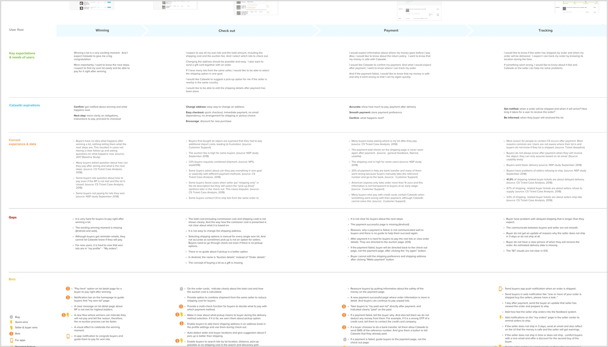
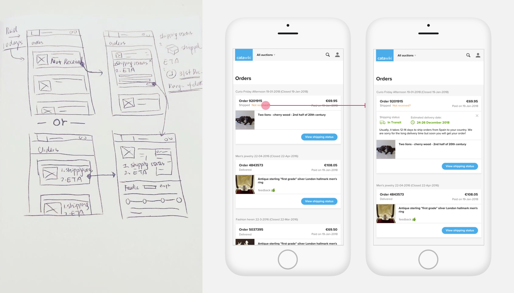
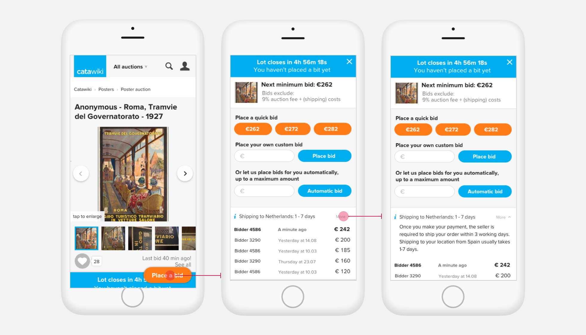
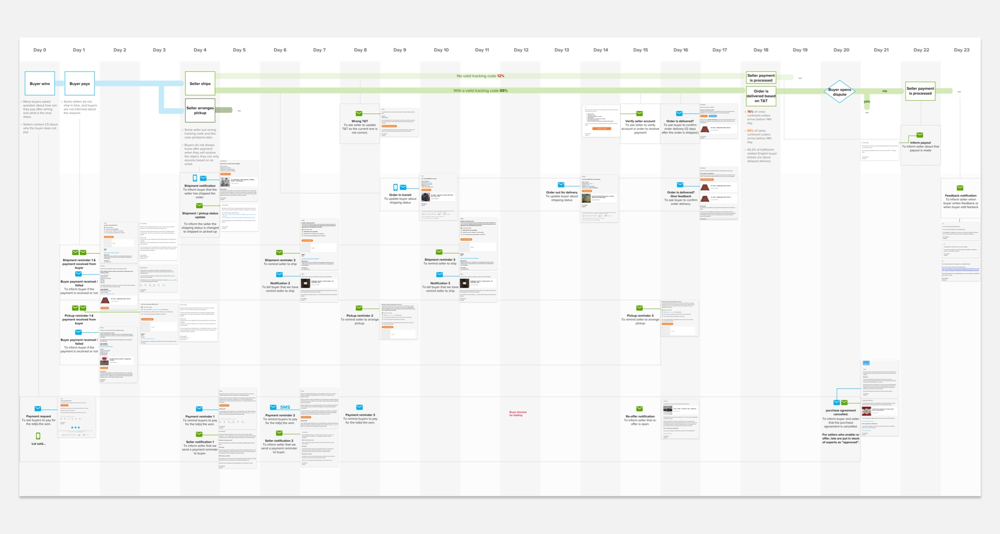
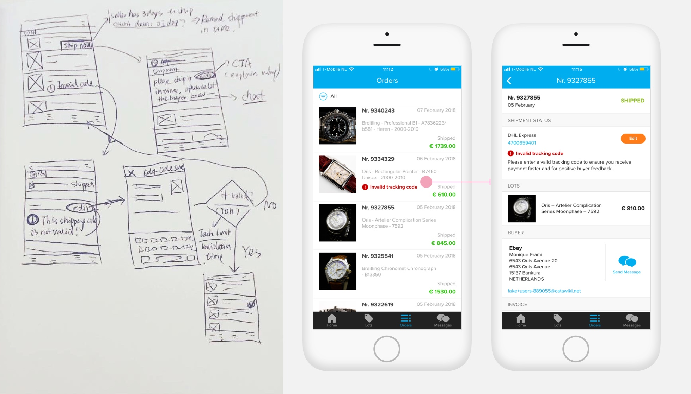
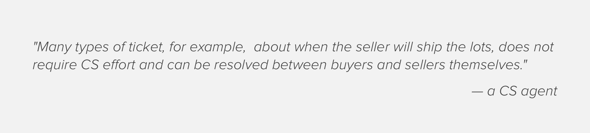
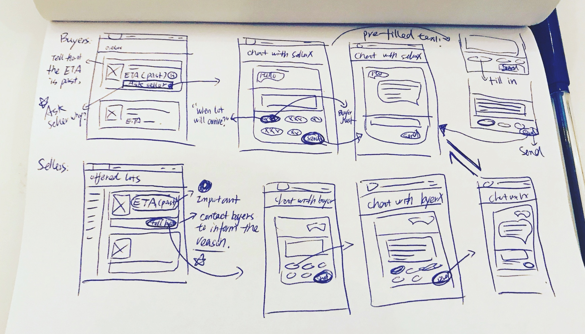
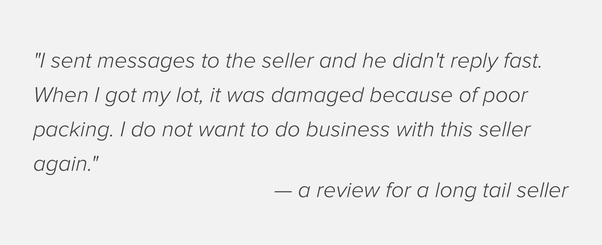

Fulfillment Customer Journey
My role & goals: Discover the problems in the fulfillment (post-purchase) pillar, and provide bets for future product growth.
Approach
Make the customer journey maps to have a holistic view of the product UX based on data, and then define big problems.
Success metrics
Reduction of customer support tickets and increase on average seller review scores
Creating the customer journey maps
Gathering data and analyzing the overall UX were the two main purposes. The maps covered all platforms with data from users research and CS analysis. They were built step by step from user expectations-company values-the reality to help me define the gaps and the came up with bets.
Define the problems
After visiting the overall user flows, quantitive data from CS and user research, here are the problems found:
Problems deep dive
Why these problems became problems, and how can I solve them? I started a deep dive to the problems with the two questions below.

There were 4 findings during the deep dive:
Although the promise is that all lots will be delivered within 14 days, 25% of over-continent shipping takes more than 14 days. It is hard to change the fact that the shipping duration is longer than average e-commerce platforms, but being transparent to buyers about the estimated time of delivery can reduce frustrations after purchase.
Quick solutions: Inform buyers about the estimated time of delivery in my orders page.
Validation: An A/B experiment was run but the result was not significant. It also did not have any negative effect and from the experience point of view, the new feature was kept.
Iteration: It would make more impact if buyers notice a long shipping duration before bidding and buying.
Validation: The result was positive and the final design would keep the estimated delivery date at both places for managing buyer expectations.
I did a touchpoints map that mapped out when and how Catawiki communicate to buyers and sellers. A shocking finding was that all the important information was communicated via emails, and there were no notifications integrated into the product.
Quick solution: Make changes on the UI level when some action is required. For example, when a track and trace code is not correct, mark it red for the seller center to warn them
Validation: After the new feature, the valid track and trace code percentage increased by 5%. The future qualitative study will be carried about how sellers want to be reminded.
Many problems could be resolved between sellers and buyers without contacting CS. However, the product does not encourage buyer and seller communication.
Quick solutions: Before problems occur, guide buyers and sellers to talk to each other. For example, if a seller does not ship in time, ask the buyer to contact the seller to ask when the seller will ship. And also guide the seller to inform the buyer a reason for the delay. In this way, buyers' doubt are removed and CS effort is saved.
Next step: Build up the default pre-fill text and translation in the chat system and build entry points for the chat when buyers and sellers needs communicate. Validate the design concepts.
Many sellers are not pro sellers and they need some guide to impress buyers. Integrate the seller guide during the selling flow can teach sellers what to do in every step. It is easier for sellers to do the right thing on the right spot and improve the experience of both buyers and sellers.
Quick solutions: Give seller guide about how to pack lots when lots are sold. Show sellers a timer to guide them ship on time. Guide them to talk to buyers when shipping takes longer. Guide them to gift repeat buyers to gain better reviews.

Next step: Refine the design and gather feedback from long tail sellers about the new design. Launch the design and monitor if the number of CS tickets reduces.
Combine the ideas
The next step for this project is to quickly mockups ideas above together to see how they can fit with each other. It is also useful to use the mockups to demonstrate the power of the new designs.
Lessons learned
A holistic view of UX: Before this exercise, I used to focus on a small part of the product. It was necessary to walk through the entire user journey and gain a holistic view. It helped me understand why a problem occurs by identifying holes in the UX strategy of the product.
Prioritize with the DEV team: Although there were many valuable findings from the maps, I forget to reach to the DEV team regarding how to execute the ideas at an early time. Next time it worth a prioritization exercises together so that DEV effort and limitation can be taken care.